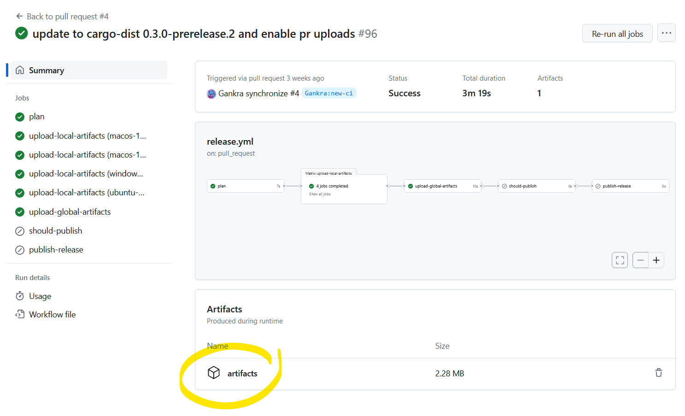

Introduction
dist distributes your binaries
The TL;DR is that with dist setup, just doing this:
git commit -am "release: 0.2.0"
git tag "v0.2.0"
git push
git push --tags
Will make this Github Release:

Or if you're using oranda, you'll get this website:

Plan, Build, Host, Publish, Announce
Cutting releases of your apps and distributing binaries for them has a lot of steps, and dist is quickly growing to try to cover them all!
To accomplish this, dist functionality can be broken up into two parts:
- building (planning the release; building binaries and installers)
- distributing (hosting artifacts; publishing packages; announcing releases)
The build functionality can be used on its own if you just want some tarballs and installers, but everything really comes together when you use the distribution functionality too.
Building
As a build tool, dist can do the following:
- Pick good build flags for "shippable binaries"
- Make tarballs and installers for the resulting binaries
- Generate machine-readable manifests so other tools can understand the results
That's a short list because "we make installers" is doing a lot of heavy lifting. Each installer could be (and sometimes is!) an entire standalone tool with its own documentation and ecosystem.
Distributing
As a distribution tool, dist gets to flex its biggest superpower: it generates its own CI scripts. For instance, enabling GitHub CI with dist init will generate release.yml, which implements the full pipeline of plan, build, host, publish, announce:
- Plan
- Waits for you to push a git tag for a new version (v1.0.0, my-app-1.0.0...)
- Selects what apps in your workspace to announce new releases for based on that tag
- Generates a machine-readable manifest with changelogs and build plans
- Build
- Spins up machines for each platform you support
- Builds your binaries and tarballs
- Builds installers for your binaries
- Publish:
- Uploads to package managers
- Host + Announce:
- Creates (or edits and undrafts) a GitHub Release
- Uploads build artifacts to the Release
- Adds relevant release notes from your RELEASES/CHANGELOG
(Ideally "host" would come cleanly before "publish", but GitHub Releases doesn't really properly support this kind of staging, so we're forced to race the steps a bit here. Future work may provide a more robust release process.)
Most of the scripts roughly amount to "install dist", "run it exactly once", "upload the artifacts it reported". We want you to be able to copy that one dist invocation CI did, run it on your machine, and get the same results without any fuss (not to bit-level precision, but to the kinds of precision normal people expect from cargo builds). No setting up docker, no weird linux-only shell scripts that assume a bunch of tools were setup in earlier CI steps.
Of course even if we perfectly achieve this ideal, "you can run it locally" and "you want to run it locally" are different statements.
Check Your Release Process Early And Often
To that point, release.yml can now run partially in pull-requests. The default is to only run the "plan" step, which includes many integrity checks to help prevent "oops the release process is broken and we only found out when we tried to cut a release".

You can also crank the pull-request mode up to include the "build" step, in which case the PR Workflow Summary will include an artifacts.zip containing all the build results. We don't recommend keeping this on all the time (it's slow and wasteful), but it can be useful to temporarily turn on while testing a PR.
